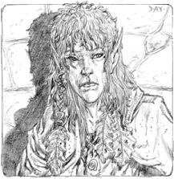

El Umbral de Arcadia
Eliseo ap Liam: 2003 - 2008
Eliseo ap Liam: 2003 - 2008
Halostian

Origen: PrimonatoCorte: Otoño
Historia: quizás sea el más renombrado de los líderes de las cuatro Cortes Estacionales en la Guerra de las Estaciones; Halostian fue más conocido por su astucia e intelecto. No tan combativo y abiertamente agresivo como Luxcian o Nyx la Ciega, ni tan conciliador como la Dama Sadiah, fomentó las rivalidades entre las otras Cortes para su propia ventaja. Durante la propia guerra, Halostian ganó muchas hadas del Solsticio para su causa, y solía esperar a que sus enemigos se atacaran los unos a los otros antes de entrar en acción.
A diferencia de la mayoría de los parientes del Otoño, Halostian se centró durante la mayor parte del tiempo en expandir su control sobre los Dominios; aunque también pasó un tiempo considerable estudiando la historia y las intrigas políticas tanto de las hadas como de la cultura humana. Era ocasiones ha sido tachado de humanista, constantino y militante, con sus pautas periódicamente para confundir y desorientar a sus enemigos; y sus criados. Así como llevó a cabo un juego peligroso de fintas y faroles con las Cortes Estacionales, llevó a cabo uno incluso más delicado equilibrando la minada de amenazas para su poder.
Aunque Halostian a menudo enfrentaba a sus consejeros y criados más próximos entre sí, cada uno de ellos intentando brillar con más intensidad que el siguiente, también se ganaba su respeto y admiración. Cualquiera habría aprovechado la oportunidad de destituirlo y gobernar, pero nadie le ha deseado abiertamente mayor mal que un obstáculo en la sucesión. Cuando se informó de que había caído en la Batalla de Piedra, muchos parientes del Otoño le lloraron; y aunque lo temían, sus enemigos también lloraron la muerte de un adversario tan honorable.
Sin embargo, el último capítulo de la vida de Halostian no ha podido ser escrito todavía. Aunque muchos lo recuerdan claramente cayendo en el campo de batalla, su cuerpo nunca fue verdaderamente identificado. Bastantes hadas del Otoño, así como un número importante de hadas del Solsticio, siguen creyendo que puede que haya alguna posibilidad de que sobreviviera al conflicto, aunque los años de silencio han plantado semillas de dudas incluso entre los más esperanzados.
Algunos creen que se está tomando un tiempo para observar tranquilamente la situación y desarrollar una nueva estrategia, sin contar con que se revele demasiado pronto; otros especulan que ha pasado los años buscando algunos tesoros legendarios o rituales olvidados que asegurarán la victoria del Otoño. Teorías salvajes incluso enfrentan a Halostian y Drail uno contra otro en un conflicto imaginario, cada uno buscando engatusar a las hadas del Solsticio para que luchen bajo su bandera y ganar cada vez más espías y contactos entre las Cuatro Cortes.
Aportado por Eliseo ap Liam